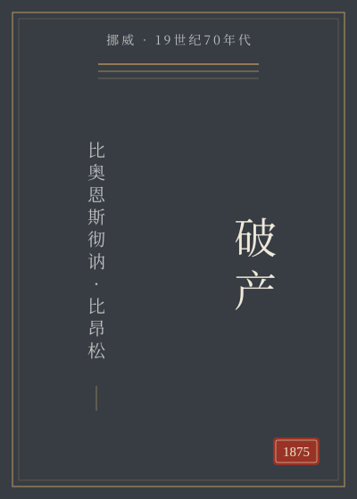

破产
一、基本信息
| 作者 | 比奥恩斯彻讷·比昂松 |
|---|---|
| 成书/出版 | 1875年（Britannica B337：En fallit (1875)——戏剧） Bjornstjerne Bjornson — Encyclopaedia Britannica（百科全书） |
| 国别/地区 | 挪威 |
| 时代 | 近代 · 19世纪70年代 |
| 体裁 | 戏剧 |
| 语言 | 挪威语 |
《破产》社会剧结构图（主题·结构图）
二、创作背景
Britannica（B337）：En fallit (1875)——戏剧（'The Bankrupt'）。
Britannica（B337）：'his plays were influential in establishing social realism in Europe'。
题材（通说待核）：银行家特勒丹的破产——商业诚信的社会剧。
三、内容脉络
（通说待核——B337未载剧情）破产者的道德清算。
（通说待核）'诚实的破产'与商业社会。
四、主要人物表
| 人物 | 身份 | 说明 |
|---|---|---|
| 特勒丹 | 银行家 | （通说待核，B337未载） |
五、主题与艺术特点
- 商业伦理的社会剧（B337：social realism）。
- 破产的道德性（书名语境——通说待核）。
- 19世纪挪威资本主义（通说待核）。
六、影响与评论
- Britannica：'influential in establishing social realism in Europe'（B337）。
Bjornstjerne Bjornson — Encyclopaedia Britannica（百科全书） - Britannica：1903诺奖（B337 交叉）。
Bjornstjerne Bjornson — Encyclopaedia Britannica（百科全书）
七、阅读建议
难点
- 北欧商业社会语境。
- '社会剧'的形式。
- 《破产》中译本（人民文学等——通说待核）。
- 挪威文原版。
比昂松戏剧首选；与《编辑》对读。
八、待核实
- 特勒丹人名核对（B337未载）。
- 1875年首演细节待核。
- 与易卜生社会问题的关系待核。